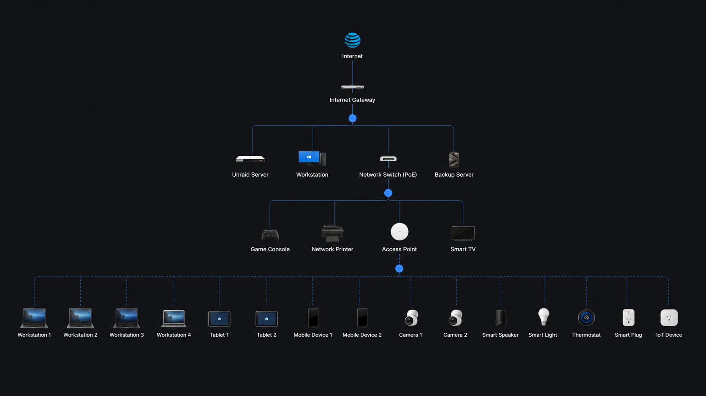

Network Diagram¶
Summary¶
This page documents the logical network layout behind the home lab.
The goal is to understand how services connect, where traffic flows, what is exposed, and how monitoring fits into the environment.
Sanitized Network Topology¶

Items Represented¶
| Area | Examples |
|---|---|
| Edge/router | Internet gateway and routing boundary |
| Switching | Core wired network and PoE switching |
| Wireless | Access point and wireless clients |
| Servers | Unraid and backup-style infrastructure |
| Endpoints | Workstations, tablets, mobile devices, cameras, and IoT devices |
| Monitoring | Visibility into connected infrastructure and device layout |
Public Diagram Rules¶
For public diagrams, generalize or blur:
- Public IPs
- Private IPs
- MAC addresses
- Serial numbers
- Camera locations
- Family device names
- Sensitive hostnames
- Any service that should not be advertised